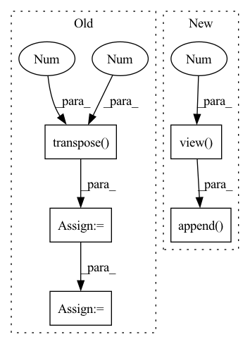

Pattern ID :1829
Before Change
// Back to batch first
attn_scores = torch.stack(attn_scores).transpose(0, 1)
mel_outputs = torch.stack(mel_outputs).transpose(0 , 1 ) .contiguous()
stop_tokens = torch.stack(stop_tokens).transpose(0, 1).squeeze(2)
// (B, T", mel_dim*r) -> (B, T, mel_dim)
mel_outputs = mel_outputs.reshape(B, -1, self.mel_dim)
return mel_outputs, stop_tokens, attn_scores
After Change
// Project to mel
// (B, mel_dim*r) -> (B, r, mel_dim)
output = self.mel_proj(proj_input)
output = output.view( B, -1 , self.mel_dim)
// Stop token prediction
stop = self.stop_proj(proj_input)
stop = torch.sigmoid(stop)
// Store predictions
mel_outputs.append( output)
attn_scores.append(attention_score.unsqueeze(1))
stop_tokens.extend([stop] * self.r)
if greedy:In pattern: SUPERPATTERN
Frequency: 3
Non-data size: 5
Instances Fragment ID: 7089517
Project Name: thuhcsi/tacotron
Commit Name: fea9ec535ec373aad564646f4f292fbee0217c29
Time: 2021-03-18
Author: johnson.tsing@gmail.com
File Name: model/tacotron.py
M Class Name: Decoder
N Class Name: Decoder
M Method Name: forward(4)
N Method Name: forward(4)
M Parent Class: nn.Module
N Parent Class: nn.Module
M File Name: model/tacotron.py
N File Name: model/tacotron.py
M Start Line: 87
M End Line: 187
N Start Line: 88
N End Line: 180
Before Change
preds.append(self.Linear(h))
preds = torch.stack(preds, dim = 1)
if y is not None:
preds_ = torch.transpose( preds, 1 , 2 )
//print(preds.size())
y = y.long()
loss = self.Loss(preds_, torch.squeeze(y))
return preds, loss
return preds
After Change
for i,k in enumerate(xs):
hs, cs = self.rim_model(row_index, ind, k, hs, cs)
preds = self.Linear(hs.contiguous().view( x.size(0), -1 ) )
preds_.append( preds)
if y is not None:
loss+=self.Loss(preds, y[:,i].squeeze().long())
preds_ = torch.stack(preds_, dim = 1)
if y is not None: Fragment ID: 7089501
Project Name: dido1998/recurrent-independent-mechanisms
Commit Name: d87a800096eaa36730cbabac535eea24973f3799
Time: 2020-02-11
Author: adidolkar123@gmail.com
File Name: networks.py
M Class Name: CopyingModel
N Class Name: CopyingModel
M Method Name: forward(5)
N Method Name: forward(5)
M Parent Class: nn.Module
N Parent Class: nn.Module
M File Name: networks.py
N File Name: networks.py
M Start Line: 255
M End Line: 276
N Start Line: 291
N End Line: 313
Before Change
// Back to batch first
attn_scores = torch.stack(attn_scores).transpose(0, 1)
mel_outputs = torch.stack(mel_outputs).transpose(0 , 1 ) .contiguous()
stop_tokens = torch.stack(stop_tokens).transpose(0, 1).squeeze(2)
// (B, T", mel_dim*r) -> (B, T, mel_dim)
mel_outputs = mel_outputs.reshape(B, -1, self.mel_dim)
return mel_outputs, stop_tokens, attn_scores
After Change
// Project to mel
// (B, mel_dim*r) -> (B, r, mel_dim)
output = self.mel_proj(proj_input)
output = output.view( B, -1 , self.mel_dim)
// Stop token prediction
stop = self.stop_proj(proj_input)
stop = torch.sigmoid(stop)
// Store predictions
mel_outputs.append( output)
attn_scores.append(attention_score.unsqueeze(1))
stop_tokens.extend([stop] * self.r)
if greedy: Fragment ID: 7089496
Project Name: thuhcsi/tacotron
Commit Name: fea9ec535ec373aad564646f4f292fbee0217c29
Time: 2021-03-18
Author: johnson.tsing@gmail.com
File Name: model/tacotron2.py
M Class Name: Decoder
N Class Name: Decoder
M Method Name: forward(4)
N Method Name: forward(4)
M Parent Class: nn.Module
N Parent Class: nn.Module
M File Name: model/tacotron2.py
N File Name: model/tacotron2.py
M Start Line: 127
M End Line: 224
N Start Line: 127
N End Line: 216